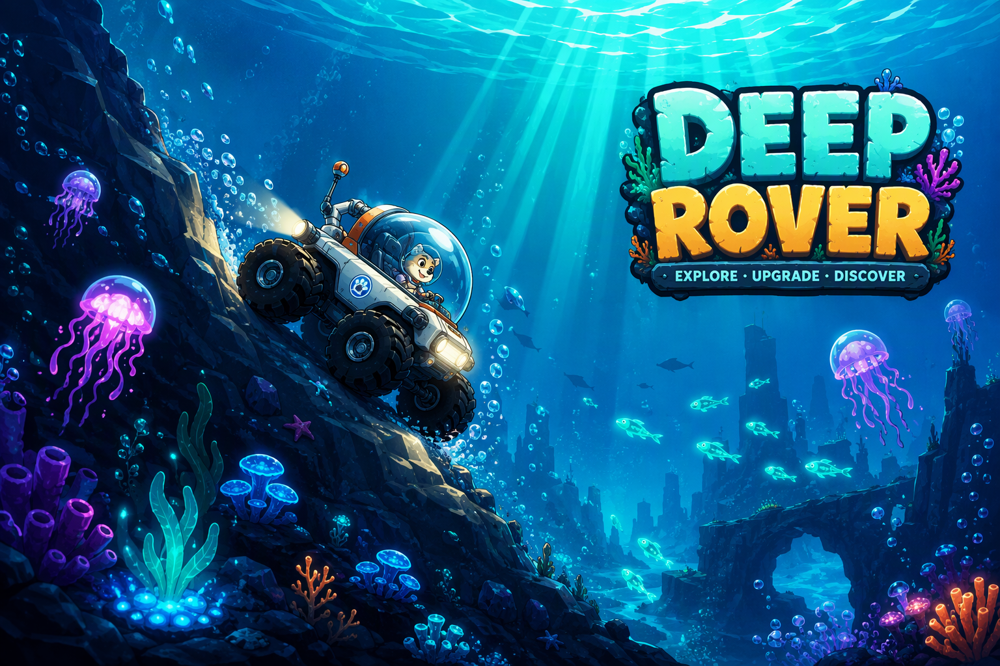

Dive deeper
Drive through four ocean zones, manage your oxygen and hull, and navigate an ever-changing underwater landscape.

Explore the depths with Pip in a homemade rover. Collect treasures, overcome underwater hazards, and uncover the artifacts of a drowned city.
Drive through four ocean zones, manage your oxygen and hull, and navigate an ever-changing underwater landscape.
Collect coins and gems, improve your equipment, and unlock new vehicles for your next dive.
Find twelve artifacts while avoiding jellyfish, mines, and other hazards of the deep.